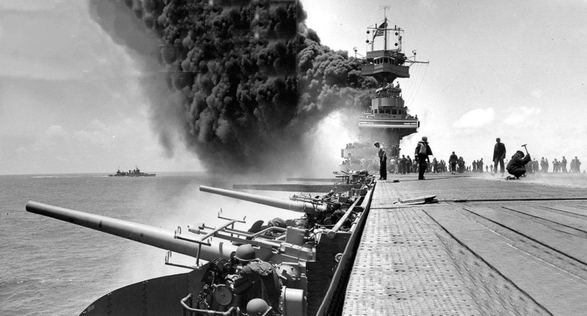

The Battle of Midway: Turning the Tide in the Pacific
Fought between June 4 and June 7, 1942, around Midway Atoll, the Battle of Midway was a decisive naval and air engagement that halted Imperial Japan's expansion across the central Pacific.
Strategic Context and the Codebreaking Advantage

In the six months following the December 1941 attack on Pearl Harbor, Japanese forces conquered vast territory across Southeast Asia and the western Pacific. Seeking to extend Japan's defensive perimeter and destroy the remaining aircraft carriers of the U.S. Pacific Fleet, Admiral Isoroku Yamamoto devised an ambitious operation centered on Midway Atoll, a small American outpost roughly 1,300 miles northwest of Honolulu.
Yamamoto's plan divided Japanese naval forces across wide distances, combining a diversionary thrust in the Aleutian Islands with an invasion force and a main carrier striking group commanded by Vice Admiral Chuichi Nagumo. Japanese planners assumed American carriers were either damaged or operating far from Midway and would only sortie after the assault began.
Unknown to Tokyo, U.S. Navy codebreakers at Station HYPO in Pearl Harbor, led by Commander Joseph Rochefort, had broken substantial portions of the Japanese naval code JN-25. To confirm suspicions that the target designated 'AF' in intercepted radio traffic was Midway, analysts arranged for Midway's garrison to transmit a plain-language message reporting a freshwater distillation breakdown—and soon intercepted a Japanese message noting that 'AF' was short of water.
Armed with reliable intelligence on Japanese intentions, timing, and order of battle, Admiral Chester W. Nimitz concentrated three aircraft carriers—USS Enterprise, USS Hornet, and the hastily repaired USS Yorktown—northeast of Midway to spring an ambush.
Carrier Air Strikes and the Turning Point of June 4

At dawn on June 4, 1942, Nagumo launched over a hundred aircraft to bomb runways, fuel tanks, and installations on Midway Atoll. While the strike caused heavy damage to island facilities, the strike leader radioed that a second attack would be needed to neutralize Midway's defenses completely.
At nearly the same moment, land-based bombers and torpedo planes from Midway attacked the Japanese fleet. Although most were shot down or missed their targets, they forced Nagumo's carriers to maneuver sharply and disrupted flight-deck schedules.
Nagumo faced a critical tactical dilemma when a delayed Japanese scout plane reported sighting American ships—including an aircraft carrier—to the northeast. Ordering armor-piercing bombs replaced with torpedoes and anti-ship ordnance on carrier hangar decks created hazardous congestion of fueled aircraft and loose munitions.
Between 09:20 and 10:20, successive waves of American carrier torpedo bombers attacked the Japanese fleet with devastating losses to themselves, yet their low-altitude runs drew Japanese Zero combat air patrols down to sea level. Minutes later, American SBD Dauntless dive-bombers from Enterprise and Yorktown arrived high overhead virtually unopposed, scoring direct hits on Akagi, Kaga, and Soryu and turning all three carriers into raging infernos.
Japan's sole surviving fleet carrier in the group, Hiryu, launched two counterstrikes that crippled USS Yorktown later that afternoon, before American dive-bombers located and fatally damaged Hiryu before sunset.
Aftermath and Long-Term Strategic Impact

Over the following two days, pursuing American forces sank the heavy cruiser Mikuma, while a Japanese submarine torpedoed and sank the crippled Yorktown and an accompanying destroyer. By June 7, Yamamoto ordered a general withdrawal, ending the immediate threat to Midway and Hawaii.
Japan lost four fleet carriers—Akagi, Kaga, Soryu, and Hiryu—along with a heavy cruiser, hundreds of aircraft, and more than three thousand sailors and highly trained aviators. Because Japan lacked the industrial capacity and pilot-training pipeline to replace such losses rapidly, its offensive carrier advantage never recovered.
While bitter fighting across Guadalcanal, New Guinea, the central Pacific islands, and the Philippines lay ahead until 1945, Midway permanently shifted the strategic initiative in the Pacific to the Allies.
Midway Atoll itself was small in area—consisting of two main islets, Sand Island and Eastern Island, inside a coral ring—yet its airstrips and seaplane facilities made it a vital forward outpost. Strengthening its garrison, radar coverage, and defenses in the spring of 1942 gave American forces an essential surveillance and air base in the central Pacific.
Naval aviation doctrine and carrier operations faced severe tests during the battle. Launching, coordinating, and recovering strikes across wide ocean distances required precise navigation, fuel discipline, and split-second timing, especially when wind shifts, cloud cover, and battle damage complicated flight-deck operations.
Damage control and shipboard resilience also stood out on both sides. Crews aboard stricken carriers fought fires, flooded compartments to correct lists, and kept engines running under heavy strain, showing how training and seamanship influenced survival even after severe hits.
Signals security and operational deception proved just as consequential as ordnance on the flight deck. Because Japanese planners remained unaware that their code security had been compromised at Midway, they continued to operate on assumptions that left their carrier group vulnerable to timely American interception.
In the broader sweep of the Pacific War, Midway did not end Japanese naval resistance overnight, nor did it prevent prolonged attrition campaigns in the Solomon Islands and beyond. Rather, it checked Japanese strategic reach at a pivotal moment and gave the Allies room to build momentum toward eventual victory in 1945.
Submarine patrols and scout aircraft also contributed to the operational picture across the central Pacific, tracking Japanese movements and screening approaches while carrier air groups pressed their attacks.
Because Midway preserved vital American carrier strength at a critical juncture in 1942, Allied forces were able to sustain offensive operations later that summer and gradually seize the initiative across the Pacific theater.
Today, historians examine Midway as a prime example of how intelligence breakthroughs, timing, and coordinated naval air operations can reshape a campaign.
Long-range search planes and island air units also played quiet but vital roles by spotting incoming formations, supporting patrol sectors, and keeping Midway's airfield operational under difficult conditions.
By blunting Japan's carrier offensive in June 1942, the battle gave Allied forces vital breathing room to build strength and carry the fight across the Pacific over the next three years.
Careful timing, intelligence analysis, and carrier air coordination turned a high-stakes ambush into a decisive shift across the central Pacific.
Every detail of reconnaissance, timing, and carrier coordination mattered as the battle unfolded across the central Pacific.
Weather conditions, radio silence, and search-sector coverage tested both fleets throughout the engagement, making disciplined execution just as vital as initial intelligence leads.
Accurate intelligence, disciplined air strikes, and timely carrier maneuvers combined to blunt a major offensive and shift momentum across the central Pacific.